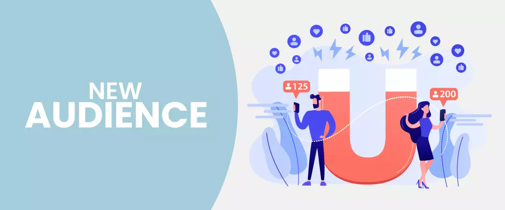
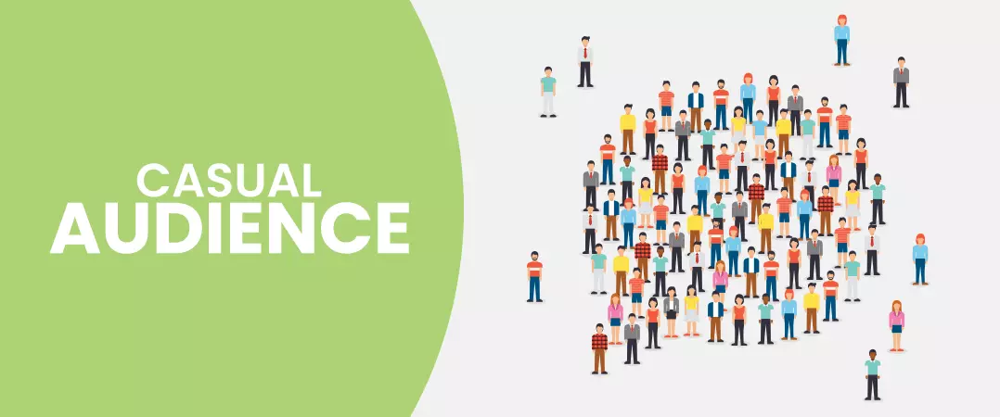
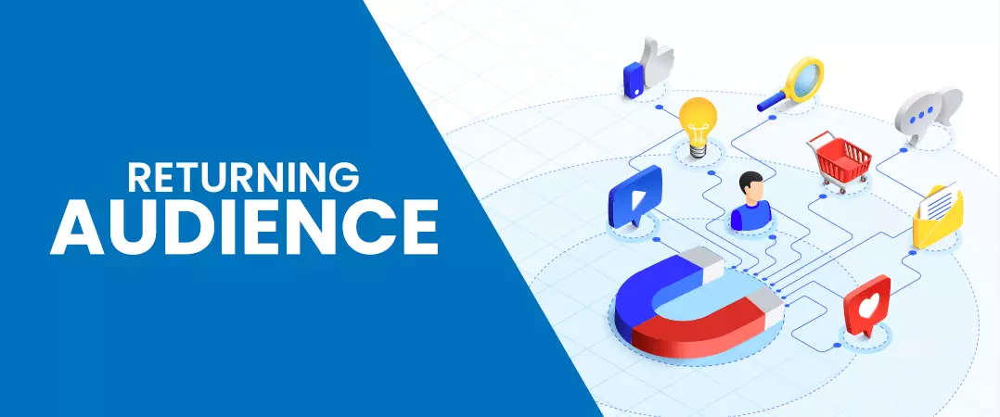
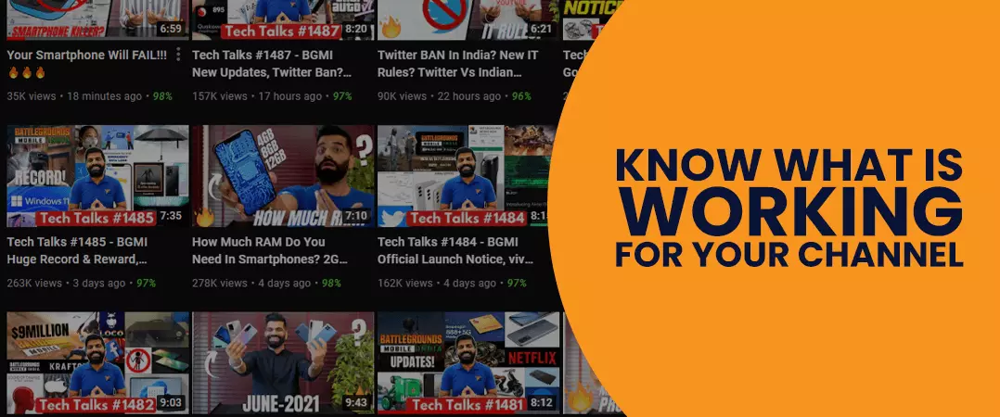
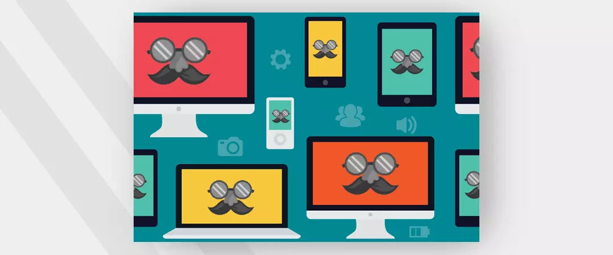
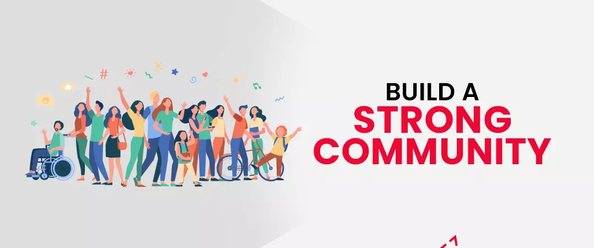
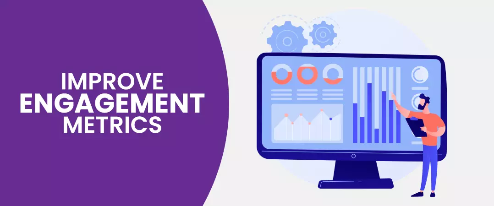
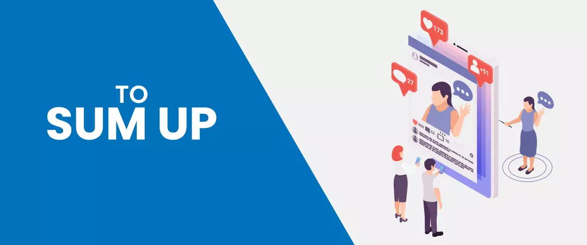

Look around you; we live in a time where we see kids spending more time on their phones browsing YouTube rather than consuming content on television.
For now, let's keep the young ones aside. The world's most loved video streaming network attracts 2 billion + active user logins every month. It is safe to say that when it comes to variety in content, YT has the lion's share, with something for every user.
While this platform is a blessing for content watchers, it comes with an equal set of challenges for creators. With so many videos to choose from, how can you attract audience attention towards your content as a YouTuber yourself? Thus, with the need comes the urge to buy YouTube subscribers.
But, just increasing your subscribers will not cut it; what you need is a loyal community of users that will interact with each of your videos with the same level of enthusiasm and excitement.
Different Types of Audience
Before we talk about building an audience on YouTube, we should take some time and address the different types of audiences that creators receive, depending on the kind of content they produce.
Channels across platform receive different types of viewers. Understanding them will help you find your target audience on YouTube.
1. New Audience

New audiences have never seen any of your videos and had not come across your channel until recently.
When do you get new viewers (RS Blog 20 Link)? - your channel will receive an influx of new traffic when one of your videos goes viral and garners attention from the masses. But these glory days do not last for long, and sooner or later, the majority of your viewers will not come back again.
However, do not be disheartened; some do stick around - probably because they are fascinated by your content. In this case, your viral video has helped boost your channel's reach. You should grab hold of this opportunity and repurpose your content to bring back your viewers.
When you start getting discovered by new users, think of ways to keep them interested in your channel. You could consider creating a series that appreciates your viral video or even produce more content covering the same topic.
2. Casual Audience

The ones belonging to this category are irregular visitors to a channel. Casual viewers will watch one or two of your videos at a time, and then it's going to be a while before you hear from them again.
Channels that have a wide variety in the content are the ones that get a casual audience. People will come, watch your videos and leave - will they return? Now that's a big question mark.
Since there are visible variations in YouTubers' videos, the audience he receives will also vary accordingly. For example, an entertainment channel will cover celebrity news, movie teasers, or some industry trends. Because of sheer diversity, each content will get a different set of visitors, each with varying interests - this results in unsteady level engagement that each video receives.
It should not come as a surprise, but YouTubers that experience an irregular flow in traffic have to look for new topics that can attract audiences back to their channel.
3. Returning Audience

The term itself says it all. Every time you come up with new content, these are the people who are the first to like, comment and share your videos. It won't be far-fetched, to say the least, if you ever decide to call them your 'fans.'
Channels that have viewers coming back frequently have a loyal community. And we can cook up some interesting theories as to why this is the case - a straightforward answer could be that the users love the content and can't help but come back for more.
The channels that get returning users are the ones that consistently produce similar types of content all year round. These YouTubers are true to their schedule and make videos covering similar topics or by following specific formats.
Because the same people come back to view their content, the creators won't notice much difference in views, watch time, likes, and comments on most of their videos.
The podcast is an example of a video format that constantly receives returning audiences in negligible numbers.
How to Build a Loyal Audience on YouTube
Know What Is Working for Your Channel

YouTube analytics dashboard is the best place to start. The audience retention report shows a graphical representation of different metrics such as view duration, top-performing videos, and audience retention rate for every video you create. To put it into simple words, this graph shows when your audience stops interacting with your video.
To get to the root cause of the problem, you need to scrutinize your audience retention graphs (preferably for the past month) to identify the reason that causes viewers to drop from your videos.
The more you repurpose your content from your audience retention graph findings, the more you continue to get in sync with your viewers. You will know what music to use, your ideal filming angle, when to apply transitions, what magical words to use, etc.
Become the Face of Your Channel

To build an audience on YouTube, you need to put yourself into LimeLight so that your audience can connect with you as a living entity and not just another channel. This practice becomes even more important when you create tutorials, do vlogs, are problem solvers, or entrepreneurs.
It would help if you showed your target viewers that your brand revolves around you and not the other way around. When you use your name and show your face, your audience develops deep emotional connectivity to a person having his own identity. Additionally, you can also start using your headshot as your profile icon and channel art to help with your branding efforts.
We understand, telling people to put themselves in front of a camera looks good as a mouth service. But it is a whole different ball game when you have to do it in person. It's not easy to stand in front of a camera and speak without feeling like a nervous wreck, especially if it's your initial days as a video creator.
Rome wasn't built in one day; you need to give it some time. You will see yourself getting more comfortable with the process each time you produce novel content on your channel.
Also read: How to Create a YouTube Channel Without Showing your Face
Build a Strong Community

Let's get one thing straight; your subscribers are not necessarily your loyal followers. A casual subscriber watches one of your videos and doesn't show up when the next one goes online.
Now a 'community - that is something different. Here, you determine how loyal your viewers are by looking at the return visits and engagement level and not by how many subscribers you get.
When given a choice between a loyal community and a large subscriber count, the former will always give you better results.
Let me help you understand by painting a real-life scenario – suppose you are the admin of a tech channel that reviews different electronic gadgets. The audience you receive will vary; some may come for mobile unboxing, whereas others for laptop reviews. Don't get me wrong; these people will be loyal to you - just not to the extent you wish them to be. Some may even subscribe but may be reluctant to watch videos that don't tickle their fancy. On the other hand, if you stick to creating content associated with mobile, the result would be fewer users and fewer subscribers. But although small in number, these people will be more loyal because you both share common interests.
To build an audience on YouTube that are loyal to you, you need to be open about yourself:
- Tell them why you do what you do
- Disclose something about yourself that will make them care about you
Improve Engagement Metrics

YouTube, just like any other social networking or search engine platform, wants to give its user's the best results for their searches.
In the race to target an audience on YouTube, there is one common mistake that many creators make that stops them from achieving their desired outcome. Since, Google owns YouTube, they start drawing similarities between two completely different search engines. Please understand they are not the same. Think of Google as a guidance counsellor determined to answer any query that pops up in your head. But YT is like a spa where users come for peace of mind and relaxation.
Google wants to provide searchers with the most helpful information for their queries, not to feel the need to return. But from a YouTube standpoint, it wants network users to stay on the platform for a long time. When one video ends, the user should not leave - Instead, he should continue watching other videos.
- Start: A term popularly used for videos that start a user's session on YouTube.
- Session: session is the term used to denote videos that rake in the lengthiest viewing time. YT will extent the discoverability of content that contributes to bringing users back on the platform. These are videos that users can't get enough of - they start with one and end up watching a bunch of them.
- Watch-time: watch-time is the time users spend consuming content. YouTube algorithm likes to promote videos that receive higher watch time.
When a viewer starts his session from the home page - YouTube complies with a list of videos that it thinks the user would prefer watching. The recommended content is based on users browsing history.
To Sum Up

If you have been in the game for a long time, then going unrecognized for your work can take a toll on your mind. But please do not lose hope, have a warrior's mentality. With time and the right actions, you will successfully build a loyal YouTube audience for yourself.
By implementing the points mentioned in this article, you can identify who your target audience is and then proceed to create content that will compel them to come back again and again.
We hope you found our article on “How to build a loyal audience for YouTube channel in 2021” helpful. Please do check out more such content on our website.
What is your ideal approach to building a loyal audience on YouTube?
Feel free to share